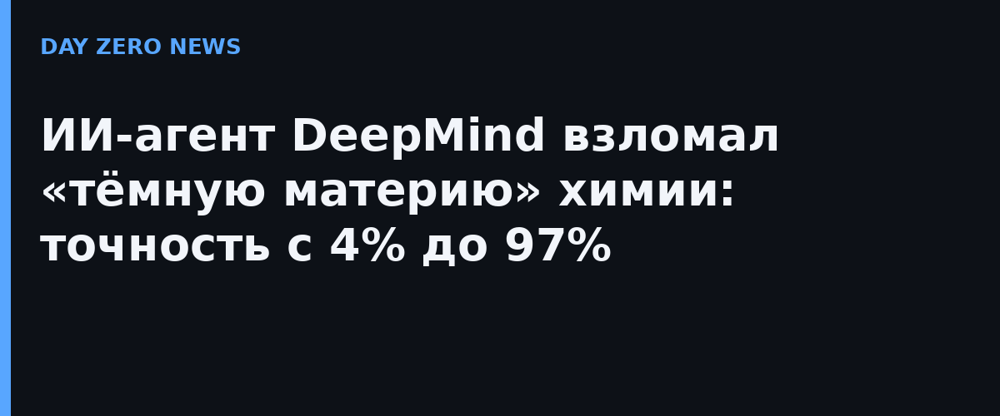

Каждая капля крови, горсть почвы или экстракт растения содержат тысячи малых молекул — питательных веществ, гормонов, лекарств и их метаболитов, загрязнителей. Современный масс-спектрометр видит десятки тысяч таких сигналов, но не говорит, какой именно молекуле принадлежит каждый из них. Стандартный приём — сверка спектра с эталонными библиотеками, однако, как сообщает DeepMind, даже после десятилетия их роста библиотека сопоставляется в среднем лишь с 5% спектров (10% — для образцов человека). Остальное в отрасли называют «тёмной материей» масс-спектрометрии.
25 ноября 2026 года DeepMind представила Mass Spec Skills — набор доменных навыков для агентской платформы Google Antigravity. Идея не в том, чтобы языковая модель «угадала» структуру на глаз: это невозможно без точных масс-расчётов и симуляции разрыва связей. Вместо этого агент Gemini сам вызывает проверенные инструменты аналитической химии (библиотеки GNPS и MoNA, MAGMa, MetFrag), опрашивает публичные базы вроде PubChem и выстраивает классический ручной workflow в один автоматический конвейер: подготовка сигнала — поиск по библиотекам — вывод молекулярной формулы — ранжирование кандидатов — перекрёстная проверка. На выходе химик получает не просто ответ, а аудируемый отчёт с доказательствами по каждому фрагменту.
В собственном бенчмарке DeepMind (100 спектров из публичных библиотек, по три попытки на каждый) без интернета и навыков точность всех трёх моделей — лёгкой Gemini 3.8 Flash и флагманских Gemini 4 Argon и Gemini 4 Carbon — не превышала 4%. С подключёнными Mass Spec Skills все три модели идентифицировали и верифицировали точную молекулу примерно в 97% попыток — причём лёгкая модель сравнялась с флагманами, а расход генерируемых токенов заметно снизился. В демонстрационном кейсе агент вывел формулу C20H21ClN6O, переоценил все 845 изомеров PubChem, объяснил 97,7% суммарной интенсивности фрагментов (14 из 19 пиков) и разрешил ничью между кандидатами, проверив химию фрагментации. Независимая оценка университетом Претории: точность предсказания сложных структур выше 90% в большинстве тестов.
Плагин Mass Spec Skills доступен в Google Antigravity уже сегодня — и в платных, и в корпоративных аккаунтах. DeepMind параллельно открывает заявки: 10 000 учёных бесплатно получат высший тариф использования на шесть месяцев (отбор волнами, по мере возможности). Релиз продолжает серию научных агентов Antigravity — после хеминформатики и поиска антимикробных пептидов. Для лабораторий это значит, что «тёмная материя» спектров впервые становится разгадаемой в промышленных масштабах.